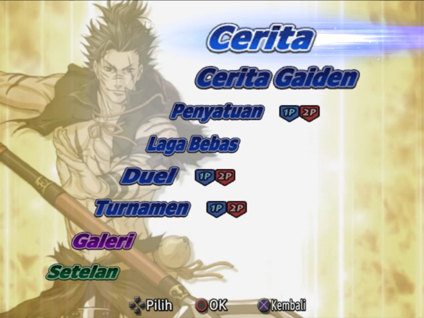
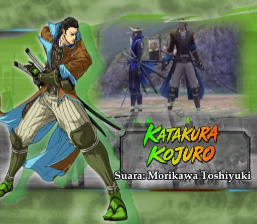

Pilih platform
Nintendo Wii · RBSJ08
Sengoku Basara 2 Heroes
Terjemahan Bahasa Indonesia
WIIv0.99.1 BETAGRATIS

Terjemahan Bahasa Indonesia
Patch ini GRATIS. Kalau kamu membayar untuk mendapatkannya, kamu tertipu. Dilarang menjual patch ini maupun ISO hasil patch.
Terjemahan yang sama untuk Sengoku Basara 2 Heroes di Wii (disk Heroes dari Double Pack, Jepang). Font, pemenggalan dialog, dan layar khusus Wii disesuaikan dengan sistem Wii. Main di Dolphin (PC/Android) atau di Wii asli lewat USB Loader.
ISO Wii 4,45 GB — tinggal buka di Dolphin atau USB Loader. Jangan dibagikan ulang. Masih v0.99: bisa crash setelah layar rampasan; pakai patch v0.99.1 di bawah.
Dipasang ke game ISO atau RVZ milikmu sendiri, atau langsung ke ISO Wii v0.99 hasil patch sebelumnya (hasilnya sama). Hasilnya ISO Wii ±4,2 GB (muat di kartu SD FAT32). Memperbaiki crash/force close setelah layar rampasan dan "Disk tidak dapat dibaca" setelah memilih jenderal.
Buka ISO hasil Wii langsung di HP Android, tanpa Dolphin. Aplikasi pihak ketiga (B2HWii-Android). Sudah mengimpor ISO v0.99? Impor ulang ISO v0.99.1 supaya perbaikan crash rampasan terpakai.
ISO langsung bisa: common key Wii tersedia di patcher (tekan Salin & pakai). RVZ tidak butuh kunci. Punya WBFS? Di Dolphin: Convert File, Format RVZ, Compression Zstandard.
Buka patcher Wii di Chrome/Edge (juga di HP Android), pilih file .iso/.rvz dan .patch (untuk ISO, tekan Salin & pakai di kolom common key), lalu klik Patch sekarang. Di PC tersedia juga patch_wii.py (Python).
Buka ISO hasil di Dolphin (PC/Android). Di Android, ISO juga bisa dibuka lewat aplikasi (APK) buatan Dwiki Aditya. Wii asli: lewat USB Loader GX atau WiiFlow dengan cIOS. Mau hemat ruang? Ubah ISO hasil ke RVZ (±3,8 GB).
| Game | Sengoku Basara 2 Heroes Double Pack (Jepang), disk Heroes, ID RBSJ08, dump dari disk milikmu sendiri |
|---|---|
| Masukan | ISO Wii (+ common key Wii, tersedia di patcher) atau RVZ buatan Dolphin (Zstandard). WBFS diubah dulu ke ISO/RVZ. |
| Hasil patch | ISO 4.454.055.936 byte, SHA-1 725DF73E8C93CFB8D5C97A15E1FFA229E402D9A5 |
Terjemahan yang sama dengan versi PS2, ditambah penyesuaian khusus Wii (font, pemenggalan dialog, kontroler Wii Remote/Nunchuk/Classic, layar strap & menu HOME, banner channel Menu Wii).

Menu, dialog cerita, 9.227 dialog pertempuran, profil & riwayat karakter, toko & undian Basara, galeri, layar simpan/muat dan setelan. Gaya bicara tiap karakter dipertahankan.

Nama jurus memakai romaji resmi, plus spanduk pertempuran, kartu MENANG / TAKLUK TOTAL / TELAH GUGUR, combo DOUBLE! / TRIPLE! / BASARA, dan penghitung misi di HUD.

Nama stage, syarat menang & kalah, dan bos musuh di layar persiapan — semua diterjemahkan.

13 kartu nama karakter beserta pengisi suaranya, plus promo Turnamen Besar, Laga Sengit, dan Penyatuan Negeri.

Teks cerita, nama, kartu judul dan judul penutup di setiap video pembuka bab.

Video promo Turnamen Besar dan Laga Sengit, mode Turnamen Extreme, nama-nama petarung turnamen.
Isi disk Wii terenkripsi, jadi patcher butuh common key Wii untuk membukanya. Setelah memilih ISO, tekan Salin & pakai di kolom kunci yang muncul; kunci hanya disimpan di browsermu. RVZ buatan Dolphin bisa dipatch tanpa kunci.
Itu bug JIT Dolphin Android, dan muncul juga di game asli tanpa patch. Tekan Ignore for this session, atau matikan Settings → Config → Interface → Use Panic Handlers.
Bisa lewat patcher Wii di Chrome Android: pilih file .iso/.rvz dan .patch. Siapkan ruang kosong yang cukup dan biarkan layar menyala sampai selesai.
Lewat USB Loader GX atau WiiFlow dengan cIOS. ISO hasil memakai partisi fakesign; jalankan dengan loader yang mendukung (IOS dengan trucha/cIOS). Mau hemat ruang? Ubah ISO hasil ke RVZ (±3,8 GB).
Laporkan lewat GitHub Issues dengan screenshot dan lokasi kejadian (mode, stage, menu). Daftar lengkap perubahan dan masalah yang diketahui ada di README_ID.txt.